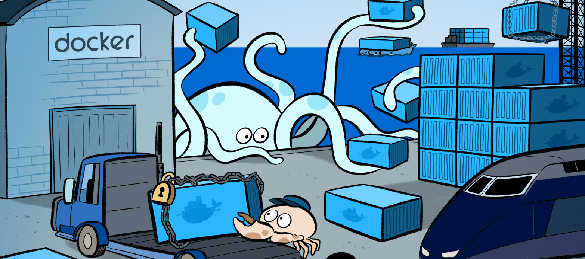

我们在日常使用
docker的时候，很容易出现错误，而且很多错误即使你已经很熟悉docker了还是出错。我这里整理了，自己使用docker时候常见的需要注意的一些要点，希望之后多多留意。

1. 镜像构建机制
主要说明容器镜像构建的流程
构建 docker 镜像的时候，需要 Dockerfile 文件和构建所需的上下文。而编译文件，可以来自 Git 仓库、压缩包和指定的配置文件。
# build命令使用说明
docker build [OPTIONS] PATH | URL | -
# Git仓库
$ docker build https://github.com/docker/context.git
# 压缩包
$ docker build - < context.tar.gz
$ docker build http://server/context.tar.gz
$ docker build -f ctx/Dockerfile http://server/context.tar.gz
# 配置文件
$ docker build .
$ docker build - < Dockerfile
$ wget http://server/Dockerfile | docker build -
当执行上述构建命令的时候，docker 客户的命令会：
- 把当前目录及子目录当做上下文，传递给
docker server - 从当前目录开始找
Dockerfile文件，不包括子目录 - 找到文件之后，检查文件的语法是否存在问题
- 依次执行
Dockerfile文件中的指令，根据指令生成中间过度镜像
构建镜像所生成中间过度镜像会存储在本地，为之后的指令或构建作缓存。为了加快构建速度，注意需要减少传递给 docker server 的文件数量，最好将 Dockerfile 文件放在单独的空目录中。
# --no-cache: 不使用缓存，每条指令都重新生成镜像
# -f: 明确指定Dockerfile文件存放位置
# -t: 给生成的镜像打上标签，可以重复指定多个标签
$ docker build --no-cache=true -f /path/to/Dockerfile \
-t image_name:image_version /path/to/build
可以使用 .dockerignore 来忽略构建时用不到的文件，之后再执行 COPY 命令的时候将排除不需要的文件。建议使用，拒绝所有文件，将需要的文件和目录进行添加。
**/*
!config
!requirements.txt
!app_backend
2. 环境变量设定
主要说明容器环境变量的设定和使用方法
在 Dockerfile 中，使用 ENV 指令来定义环境变量。环境变量有两种使用方式: $variable_name 和 ${variable_name} ，推荐使用后者。同时，ENV 指令支持部分 bash 语法。
${variable:-word}- 如果
variable不存在，则使用word；如果variable存在，则使用原字符串
- 如果
${varialbe:+word}- 如果
variable存在，则使用word；如果variable不存在，则使用空字符串
- 如果
以下指令都支持使用 ENV 指令定义的环境变量：
ADD、COPY、ENV、EXPOSE、LABELUSER、WORKDIR、VOLUME、STOPSIGNAL、ONBUILD
我们在日常使用中，都是通过 ENV 指令来设定程序使用的配置文件以及系统使用的字符编码格式，切记不要将密码当做环境变量进行设定，因为这样很不安全。
# ENV中也是可以使用变量的
ENV LANG=en_US.UTF-8
ENV NEW_LANG=${LANG}
# 支持两种定义方式
# ENV <key> <value>
# ENV <key>=<value>
3. 容器执行指令
再次介绍容器主要执行指令的注意事项
在初次写 Dockerfile 的时候，常常会被如何使用 RUN/CMD/ENTRYPOINT 而感到烦恼，这里我总结一下这三者的用法和使用方式：
- RUN 指令
- 使用说明：在镜像的构建过程中执行特定的命令并生成一个中间镜像
- shell 格式：
RUN command param1 param2 - exec 格式：
RUN ["executable", "param1", "param2"]
- CMD 指令
- 使用说明：指定容器运行时的默认参数，如果出现多次以最后一次为准
- shell 格式：
CMD command param1 param2 - exec 格式：
CMD ["executable", "param1", "param2"]
- ENTRYPOINT 指令
- 使用说明：指定镜像的执行程序，只有最后一条指令有效
- shell 格式：
ENTRYPOINT command param1 param2 - exec 格式：
ENTRYPOINT ... CMD ["param1", "param2"]
# CMD和ENTRYPOINT至少得使用一个
FROM ubuntu
ENTRYPOINT ["top", "-b"]
CMD ["-c"]
FROM ubuntu
ENTRYPOINT exec top -b
# [问题]
# 那么有了CMD后，为什么还要有ENTRYPOINT呢？
# 这种 <ENTRYPOINT> "<CMD>" 有什么好处么？
# [回答]
# 之前我们说过，跟在镜像名后面的是command值，运行时会替换CMD的默认值
# 这是因为当存在ENTRYPOINT后，CMD的内容将会作为参数传给ENTRYPOINT
使用 RUN 或 CMD 指令来执行命令的时候，通常都提供 shell 格式和 exec 格式执行方式，它们的主要区别在于：
- shell 格式
shell格式的是在某个shell中行可执行文件，默认为/bin/sh -cshell格式支持使用转义符来换行，默认为\字符shell格式的可以进行变量替换，如echo $HOME
- exec 格式
exec格式的是直接执行可执行文件，也就是["/bin/bash", "-c", "echo hello"]exec格式会被解析为json数组，所以使用双引号"而不是单引号'exec格式因为不在shell中执行，不会进行变量替换
使用 docker build 构建镜像的时候，需要注意使用 < 符号的一些注意事项：
- docker build - < somefile
- 以这种方式来构建镜像，则没有上下文
ADD只能使用远程文件URL而COPY不能使用
- docker build - < archive.tar.gz
- 会在压缩包的根目录中寻找
Dockerfile，压缩包的根目录当做上下文
4. 容器常用指令
再次介绍容器常用指令的注意事项
如果远程文件是需要登录才能访问的，应该使用 RUN wget 或 RUN curl，而不是直接使用 ADD 或 COPY 指令。使用 ADD 或 COPY 远程复制文件，会赋予文件 600 权限，并且 HTTP Last-Modified 的时间就是文件的最后修改时间。最后修改时间被改变，docker 不会认为文件被改变，docker 只会检查文件内容。
- ADD 指令
src可以是文件、目录，也可以是文件URL地址src可以使用模糊匹配，类似于shell的匹配方式src可以指定多个但必须是在上下文目录和子目录中src可以是目录，复制的是目录下的所有内容，但不包括该目录src可以是被docker能够识别的压缩包，会被自动解压复制的dest可以是绝对路径，也可以是相对WORKDIR目录的相对路径- 需要注意的是，复制的所有文件的
UID和GID都是0
- COPY 指令
- 格式和使用方式都和
ADD一致 - 不过
ADD是将上下文内的文件复制到镜像内，COPY是在镜像内的复制 - 如果
dest不存在，COPY指令会自动创建所有目录，包括子目录
# copy command
COPY --chown=55:mygroup files* /mydir/
COPY --chown=bin files* /mydir/
# add command
ADD --chown=1 files* /mydir/
ADD --chown=10:11 files* /mydir/
更改后续的 Dockerfile 指令中所使用的 shell。默认的 shell 是 ["bin/sh", "-c"]。可多次使用，每次都只改变后续指令。
- VOLUME 指令
- 指定镜像内的目录为数据卷，可指定多个数据卷
- 在容器运行的时候，
docker会把镜像中的数据卷的内容复制到容器的数据卷中去 - 如果在接下来的
Dockerfile指令中，修改了数据卷中的内容，则修改无效
- USER 指令
- 为接下来的
Dockerfile指令指定用户 - 收影响的指令有：
RUN、CMD、ENTRYPOINT
- WORKDIR 指令
- 为接下来的
Dockerfile指令指定当前工作目录，可多次使用 - 如果使用的是相对路径，则相对的是上一个工作目录，类似
shell中的cd命令 - 收影响的指令有：
RUN、CMD、ENTRYPOINT、COPY和ADD
- ONBUILD 指令
- 当以该镜像为基础镜像再次构建新的镜像时，会触发执行其中的指令
ONBUILD只会继承给子节点的镜像，不会再继承给孙子节点
[...]
# 在下一次以此镜像为base image的构建中，执行ADD . /app/src，将项目代目添加到新镜像中去
ONBUILD ADD . /app/src
# 并且build Python代码
ONBUILD RUN /usr/local/bin/python-build --dir /app/src
[...]
FROM node:slim
RUN mkdir /app
WORKDIR /app
COPY ./package.json /app
RUN [ "npm", "install" ]
COPY . /app/
CMD [ "npm", "start" ]
- HEALTHCHECK 指令
- 在看别人写的
Dockerfile时候，通常不会看到有些HEALTHCHECK。这是因为无法判断我们检测的实际业务需求，但是这个检查确实非常有必要的。比如用来检查数据库连接是否通达，业务网址是否可以正常访问等。
- 使用方式
- 通过在容器内运行命令来检查心跳
HEALTHCHECK [OPTION] CMD command - 取消从基础镜像继承来的心跳检测
HEALTHCHECK NONE command可以是shell脚本，也可以是exec格式的json数组
- 可选参数
- 检测间隔
--interval=DURATION默认 30 秒 - 超时时间
--timeout=DURATION默认 30 秒 - 重试次数
--retries=N默认 3 次
- 返回状态
docker以command的退出状态码来区分容器是否健康0：命令返回成功，容器健康1：命令返回失败，容器不健康2：保留状态码，不要使用
# 每5分钟检测本地网页是否可访问，超时设为3秒
# 可以使用 docker inspect 命令来查看健康状态
HEALTHCHECK --interval=5m --timeout=3s CMD curl -f http://localhost/ || exit 1
HEALTHCHECK --interval=5m --timeout=3s CMD ["curl", "-f", "http://localhost/"] || exit 1